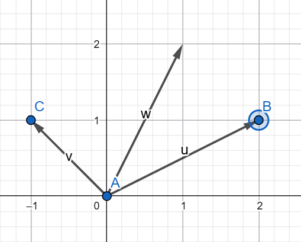

Vectors
Vectors will have 2 purposes in our program
- Direction - A vector (2;3) will mean that if we move in that direction we will go 2 to the right and 3 up
- Position - A vector (2;3) will mean that we are at the 2D position x=2 and y=3
Basic vector calculations
Just like a standard number we can add, subtract, multiply and divide vector with another vector or a number
OpenGL GLSL language has all of these operations build-in but to use them in our program we need to have a library like glm or make our own
Adding two vectors combines them. Using two directional vectors and adding them together results in a directional vector thats the result of moving using the first vector and then the second vector. In the example below we are doing (2;1) + (-1;1) resulting in (1;2)

Subtracting them is similar but it subtracts the coordinates of the second vector from the first one. Subtracting two positional vectors results in a directional vector where u - v = w and w is the direction from v to u
glm::vec3 playerPos = glm::vec3(3, 2, 3);
glm::vec3 goalPos = glm::vec3(1, 5, 2);
glm::vec3 playerToGoalDir = goalPos - playerPos;vec3 playerPos = vec3(3, 2, 3);
vec3 goalPos = vec3(1, 5, 2);
vec3 playerToGoalDir = goalPos - playerPos;Multiplying a vector with a number makes the vector bigger. This can be used to increase the force or length of our movement. The calculation looks like (2;1) * 2 = (4;2). Division works the same but divides instead of multiplying
Vector specific math
Vectors have some specific math components such as calculating their length, dot product or normalization. There are more operations available but for now we are just going to need these basic ones
Length
The length operation is an unary term meaning we only need to supply one vector to calculate it
Length tells us how far is a vector “reaching”. For example we can take a vector and get how far would we travel if we went in that direction
It is calculated using the pythagorean theorem as a vector forms a right triangle with the X and Y (and Y) axis
glm::vec3 u = glm::vec3(3, 2, 3);
float vectorLength = glm::length(u);vec3 u = vec3(3, 2, 3);
float vectorLength = length(u);If we have two positional vectors and want to know how far are they we can combine subtraction and length together
glm::vec3 playerPos = glm::vec3(3, 2, 3);
glm::vec3 goalPos = glm::vec3(1, 5, 2);
float distance = glm::length(goalPos - playerPos);vec3 playerPos = vec3(3, 2, 3);
vec3 goalPos = vec3(1, 5, 2);
float distance = length(goalPos - playerPos);Length squared
If our math library does not provide length2 we can create our own like
float length2(vec3 v){
return pow(v.x, 2) + pow(v.y, 2) + pow(v.z, 2);
}Normalizing
Normalization is an unary term where we take our vector and limit each axis to an interval between -1 and 1. The vector keeps its direction but any movement we apply using it will result in a movement of length 1
glm::vec3 u = glm::vec3(3, 2, 3);
glm::vec3 normalU = glm::normalize(u);vec3 u = vec3(3, 2, 3);
vec3 normalU = normalize(u);Multiplying two vectors
Multiplying two vectors together is more complicated as there are two different ways
Cross product
This form of multiplication is mathematically defined only for 3D (and technically 7D) vectors
It’s a binary operation that results in a vector that is normalized and perpendicular to the both vectors supplied
glm::vec3 u = glm::vec3(3, 2, 3);
glm::vec3 v = glm::vec3(1, 5, 2);
glm::vec3 w = glm::cross(u, v);vec3 u = vec3(3, 2, 3);
vec3 v = vec3(1, 5, 2);
vec3 w = cross(u, v);Dot product / Scalar product
The name dot product or scalar product are interchangeable between each other and mean the same thing
It’s a binary operation that results in a single scalar number. If the vectors are perpendicular the result is 0. If the vectors are parallel the result is a product of their magnitudes
It can be used to measure how much vectors point to each other or the angle between them
This is a more complex form of multiplication and we will not really need it in our program
glm::vec3 u = glm::vec3(3, 2, 3);
glm::vec3 v = glm::vec3(1, 5, 2);
glm::vec3 w = glm::dot(u, v);vec3 u = vec3(3, 2, 3);
vec3 v = vec3(1, 5, 2);
vec3 w = dot(u, v);Dimensions
When talking about 1D, 2D, 3D,… vectors we mean what dimension the vector will be in
The window uses only X,Y coordinates meaning its only 2D. We can only go left/right and up/down on a screen
X,Y,Z positioning coordinates in a game are a 3D vector. If we make a 2D game instead it can only use 2D vectors for positioning
Matrices
TODO: